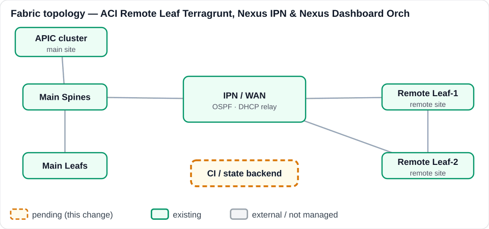
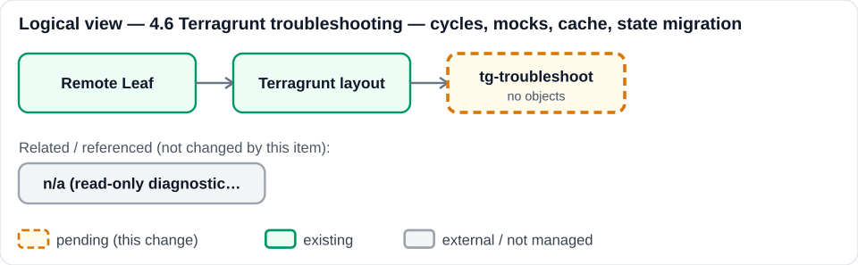

| ACI NaC Pipeline · tg-troubleshoot → Terragrunt live/ (example state backend) · pre-test · run tmpl-rlg-006 |
| ⏳ APPROVAL REQUIRED — template. Pre-test not collected; nothing has been applied. |
The pipeline has prepared 4.6 Terragrunt troubleshooting — cycles, mocks, cache, state migration for Terragrunt live/ (example state backend). Read-only notes for common Terragrunt failures: dependency cycles, missing mock_outputs, a stale .terragrunt-cache, and state migration between units. These commands do not change the fabric.
This change covers 0 object(s): 0 managed objects — Read-only diagnostic notes. No managed resources are declared.. Review the context, design values and pre-test summary below, then approve or deny. |
| Pipeline |
|
Context - please read before approving- This is a catalogue template for 4.6 Terragrunt troubleshooting — cycles, mocks, cache, state migration from ACI Remote Leaf Terragrunt, Nexus IPN & Nexus Dashboard Orchestrator. Values are the example / placeholder values in the catalogue, not a live design.
- Change scope: 0 managed objects — Read-only diagnostic notes. No managed resources are declared.. Target:
Terragrunt live/ (example state backend). - Source: generated file
live/troubleshooting-terragrunt.md (form defaults). - Credentials are placeholders only (
environment variables only). Nothing has been applied and no controller was contacted. - Pre-test, health score and fault counts are not collected (template). Run the real pre-test on your self-hosted runner before approving a live change.
- This item creates no managed objects (read-only or planning). Approving only records the decision.
- APIC / tool location: live/ → .terragrunt-cache, dependency cycles, state mv.
| |
| Decision required |
|
Each button opens a reply to 179172@gmail.com with the subject Re: ARR Simulator [APPROVAL REQUIRED] tg-troubleshoot (run tmpl-rlg-006) and the body APPROVE or REJECT. You can also reply to this email with that word. |
| Fabric topology |
 |
| Logical view |

Legend: dashed amber = pending (this change) · green = existing · grey = external / not managed. Diagrams are original illustrations of the example design. If they do not show, open the web preview. |
| Design values |
| Parameter | Value (example) | Note |
|---|
| Environment | lab | | | Cache directory name | .terragrunt-cache | | | State migration source unit (example) | shared/infra | | | State migration destination unit (example) | main-site/infra | |
|
| Change preview |
# Terragrunt troubleshooting (read-only). Environment: lab
#
# 1. Dependency cycles
# A cycle means two units depend on each other (directly or through a chain).
# Print the DAG:
# cd live/lab && terragrunt dag graph
# Classic: terragrunt graph-dependencies
# Fix the include/dependency paths; do not invent a cycle-breaking apply order.
#
# 2. mock_outputs
# run --all validate or plan fails with "output not found" when a dependency has no state yet.
# Add mock_outputs and mock_outputs_allowed_terraform_commands = ["init", "validate", "plan"].
# Apply still requires real dependency outputs; mocks are not used for apply.
#
# 3. Cache (.terragrunt-cache)
# Stale cache symptoms: missing modules, old generate files, source not updating.
# find live -type d -name ".terragrunt-cache" -prune -exec rm -rf {} +
# Then re-run init. Do not commit .terragrunt-cache or .terraform.
#
# 4. State migration
# Moving a resource between units (example: shared/infra → main-site/infra):
# cd live/lab/shared/infra
# terragrunt state pull > /tmp/src.tfstate
# terragrunt state mv -state=/tmp/src.tfstate -state-out=/tmp/dst.tfstate ADDRESS ADDRESS
# cd ../main-site/infra && terragrunt state push /tmp/dst.tfstate
# Addresses and backends are site-specific — do not invent resource addresses.
# State files contain secrets; keep them off this Pages site and out of git. |
| Pre-test summary |
| Check | Tool | Result |
|---|
| Syntax / schema validation | terragrunt validate | not collected (template) | | Dry run / plan | terragrunt run-all plan | not collected (template) | | Existing object / conflict check | controller query | not collected (template) | | Fabric health score | controller health | not collected (template) | | Faults (critical / major) | controller faults | not collected (template) | | Pre-change config backup | snapshot / export | not collected (template) |
|
| ARR Simulator · approval email template v1 · 26 Nov 2026, 8:48 PM AEDT · ACI Remote Leaf Terragrunt, Nexus IPN & Nexus Dashboard Orchestrator · item 006. Template only: no controller was contacted and no results were collected. Catalogue: zFrontier / ACI Remote Leaf Terragrunt, Nexus IPN & Nexus Dashboard Orchestrator |